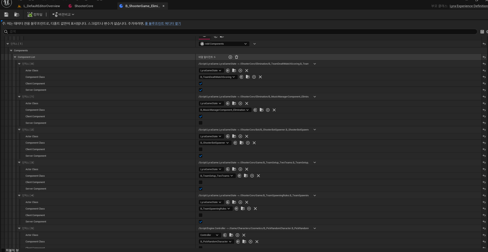
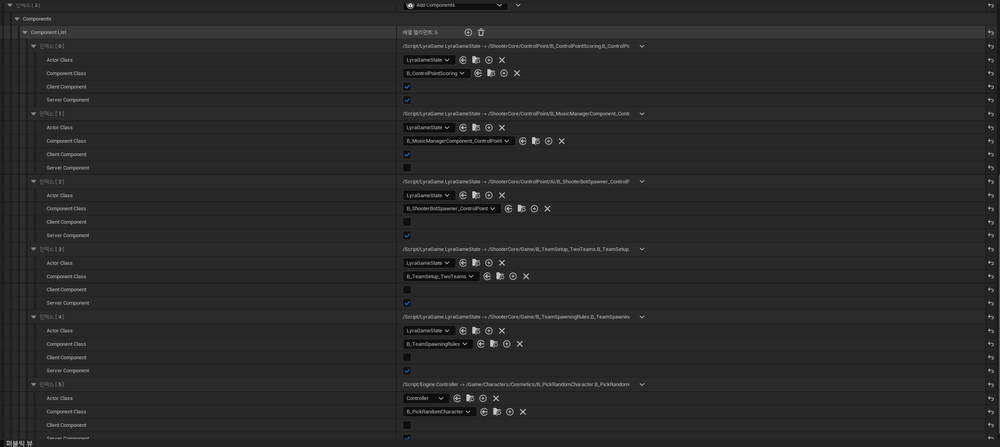
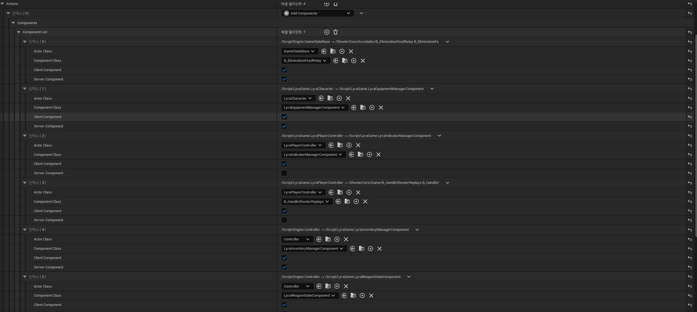

개요
언리얼 엔진5 의 라이라 예제에서 Experience 와 GameFeature 를 사용한 모듈형 게임 플레이를 보여주고 있다. 이 예제를 분석해 왜 이렇게 설계했는지 분석해보았다. 회사를 다니면서 협업을 위한 구조와 설계가 굉장히 중요하다는 것을 깨닫고, 언리얼의 GameFeature 플러그인으로 독립적으로 개발하는 것이 정말 좋은 시스템이라고 느꼈다. 이를 파보면서 라이라의 설계 의도를 조금씩 알아간다.
GameFeature 와 한계
- Game Feature 는 Action 들로 구성된다
- Action 들 중 컴포넌트 추가가 제일 유용한 기능이다
- 컴포넌트 추가는 월드에 지정한 액터의 서브클래스에 모두 컴포넌트를 추가하는 것이다
- 컴포넌트를 추가한다는 것은 사실상 원하는 게임 기능을 런타임에 액터에 추가할 수 있다
- 라이라의 ShooterCore 게임 피처에서는
EquipmentManager,IndicatorManager,InventoryManager,WeaponStateManager,AimAssistManager등과 같은 핵심 매니저를 액터에 추가했다 - 그런데… GameFeature에는 Ability 추가 기능이 없다라는 한계가 있다
- 컴포넌트 추가처럼 어빌리티 추가도 존재할 수 있을 것이라고 생각했는데 존재하지 않는다
- 그렇다면, Ability 를 추가하는 컴포넌트를 추가하는 비직관적인 방식을 사용해야 한다
- 협업 시 기획자/타 프로그래머가 컴포넌트를 추가나 수정하기 어려울 수 있다.
- 그 이유는 ASC 가 있는지, ASC 위치는 어디인지, 어빌리티 추가 시점 등을 모두 체크하기 힘들기 때문일 것이다
- 게임 피처는 단순히 전역에 ~~ 한 컴포넌트(기능)를 모두 가지세요~~ 인 것이다
- 정리하면, 게임 피처는 단순히 게임에 맞는 컴포넌트(기능) 을 모든 캐릭터가 가지세요! 이다
- FPS 슈팅 게임이면, FPS 카메라, 장비 관리 시스템, 에임 시스템 등등…
- TPS 슈팅 게임이면, TPS 카메라 …. 등등
- 여기서 컴포넌트는 각종 매니저가 될 가능성이 높다
라이라의 Experience 로 한계 극복
- 라이라는 Experience 라는 데이터 에셋을 사용하며 어빌리티와 외형을 설정할 수 있다.
- Experience 는 크게 3가지로 구성된다.
- Pawn
- GameAbility
- 활성화 할 GameFeature
- Experience 는 단순히 게임 모드를 데이터 에셋화 시켰다고 생각하면 된다.
- 하지만 여기서 라이라는 Add Abilities GameFeatureAction 을 커스텀으로 만들었다!
- 그럼 GameFeature 에서 어빌리티도 추가하면 안돼? 라는 의문이 들 수 있다.
- 하지만 정작 예제의 GameFeature 들에서는 Add Abilities 액션을 사용하지는 않았다. Experience 에서만 Add Abilities 를 사용하고 있다.
- Experience 에서만 Add Abilities 를 사용하고 있다.
- 또한, Experience 와 Game Feature 둘 다 컴포넌트 추가가 가능하고, 둘 중 한곳만 사용하는 게 아니라 두 곳에서 다른 컴포넌트들을 추가하고 있다.
- 라이라의
B_ShooterGame_EliminationExperience 는GameState에만 컴포넌트를 추가한다. - 라이라의
B_ShooterGame_ControlPointExperience 도 그렇다.


- 라이라의
ShooterCore게임 피처는Character나Controller에 대부분 컴포넌트를 추가한다.

- 그럼 GameFeature 랑 Experience 랑 똑같은 것을 할 수 있는데 왜 분리한걸까?
- Experience 와 GameFeature에 추가된 컴포넌트의 차이는 다음과 같다.
- 왜 이렇게 분리한 것일까?
| Experience | GameFeature | |
|---|---|---|
| 대상 | 주로 GameState |
주로 Character/Controller |
| 목적 | 게임 모드 관련 기능 | 캐릭터 핵심 기능 |
| 예시 | 점수 관리, 팀 관리, 타이머, 리스폰 | 장비, 인벤토리, 카메라 |
라이라의 Experience 와 GameFeature의 역할 분리
역할을 분리한 이유
라이라는 슈팅 게임 샘플로 제공되었으며, 다음과 같은 특징을 가진다.
슈팅이라는 장르는 바뀌지 않고, 게임 모드(점령, 데스매치 등) 는 자주 바뀔 수 있다! 따라서, 다음과 같이 분리한 것이다.
- Experience: 게임 모드는 자주 바뀜 (매치마다)
- GameFeature: 장르 코어는 거의 안 바뀜 (게임 전체에서 공통)
Experience (게임 모드 레이어)
"이번 게임은 어떤 룰로 진행되나?”
- 컴포넌트 : (주로
GameState에 추가됨) - 점수 계산 방식
- 승리 조건
- 팀 구성
- Ability 세트 (이 모드에서 쓸 스킬들)
- 사용할 GameFeature 목록
- 예시 :
- TeamDeathMatch → 팀 점수 관리
- ControlPoint → 거점 점령 관리
GameFeature (게임 장르/코어 액션)
"이 게임 장르의 캐릭터는 기본적으로 뭘 할 수 있나?”
- 컴포넌트 : (주로
Character/Controller적용) - 이동 방식
- 카메라 시스템
- 장비/인벤토리 시스템
- 기본 상호작용
- 예시 :
- ShooterCore → 총 쏘기, 장비 관리
- RacingCore → 차량 조종, 부스터
생각
라이라를 분석하는 데는 꽤 오랜시간이 걸렸다. 직접 비슷한 구조를 만들면서 진행했다.
좀 얕게 라이라를 분석하고 나서, 게임 피처는 플러그인 단위로 관리되니까 협업에서 정말 도움이 많이 되겠다라고 생각했다.
슈팅 게임 외에 RPG, 액션 게임 같은 경우에도 사용하고 싶어서 Experience + GameFeature 를 하나의 게임 모드가 아닌 하나의 캐릭터 또는 적으로 제작하려고 프레임워크를 만들어 보고 있었다.
- Experience →
CharacterDefinition으로 바꾸고 - GameFeature → Character 이름 으로 변경해서
캐릭터를 선택하면, CharacterDefinition 안의 Pawn, Ability 가 해당 플레이어에게만 적용되고 GameFeature 도 해당 플레이어에게만 적용된다.
하다보니 현재 CharacterDefinition 과 GameFeature 의 역할의 경계가 모호하다.
라이라에서도 Experience 와 GameFeature의 역할을 다르게 설정했지만, 강제하지는 않는다.
둘 다 같은 기능을 사용할 수 있지만, 우리는 보이지 않는 룰에 따라 역할을 구분했다.
실수로 GameFeature 에 장르와 관련된 컴포넌트 말고 다른 것도 넣을 수 있는 것이다.
실수를 방지할 수 있는 장치를 아직 찾지 못했고 이는 위험하다고 생각이 든다.
내 프로젝트에서는 CharacterDefinition 과 GameFeature 의 역할을 어떻게 하면 좋을지 고민이다.
또한 전역이 아닌 해당 플레이어에게만 적용되게 하는 필터를 만들어 구현 해놓았지만,
기본적인 GameFeature 의 철학에 맞지 않는 건가라는 생각도 든다.
최종 목표는 게임 피처(플러그인) 단위로 개발자가 독립적으로 개발하는 것이다.
글로 작성된 규칙보다는 코딩 단계에서 실수를 방지하는 해결책이 있는 것이 좋다고 생각한다.
쉬운 예시로 언어 차원에서도 기본 생성자를 제거하고, 의도된 대로 초기화하는 커스텀 생성자를 만들 수 있도록 하여 실수를 줄일 수 있다.
좀 더 고민할 필요가 있다.